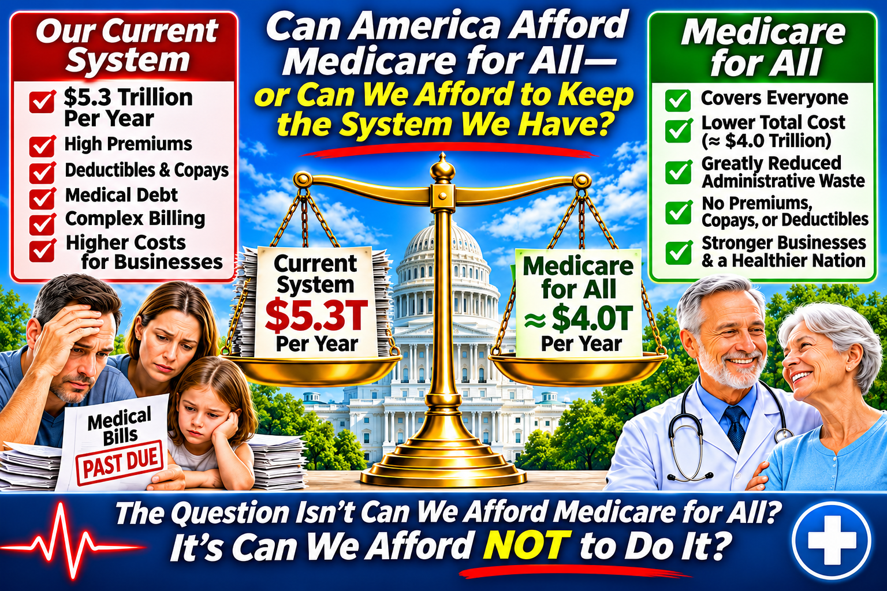

Can America Afford Medicare for All—or Can We Afford to Keep the System We Have?
A practical economic case for comparing the full cost of healthcare—not just the federal budget.

November 2026 | Universal Healthcare Social
We are asking the wrong question
When Americans hear “Medicare for All,” the first question is often: “How would we pay for it?” That is an essential question. But it is incomplete. We already pay for healthcare—through taxes, employer insurance contributions, employee premiums, deductibles, copayments, and bills that arrive after treatment. The issue is not whether healthcare must be financed. It is whether the financing system we have is worth what it costs.
Medicare for All would not make doctors, hospitals, medicines, or equipment free. It would change how we pool funds, pay providers, and protect people from medical bills. The fairest test is to compare the total cost and results of both systems.
What America already spends
According to the Centers for Medicare & Medicaid Services (CMS), U.S. national health spending reached approximately $5.3 trillion in 2024—$15,474 per person, or 18.0% of the economy. That is an enormous commitment of national resources. Yet spending so much does not ensure that every resident has affordable, dependable access to care. [1]
Employer-sponsored coverage is expensive too. KFF reported that the average annual premium for employer-sponsored family coverage reached $26,993 in 2025, including $6,850 paid by workers and $20,143 paid by employers. Employer contributions are part of the cost of employing people, even when they do not appear on a worker’s pay stub as wages. [2]
Why a bigger federal budget can still mean a smaller national bill
Under a single-payer approach, federal healthcare spending would rise substantially because many payments now made through private insurers and employers would move into public financing. That shift can look alarming if we examine only the federal ledger.
Consider a hypothetical household and employer spending a combined $25,000 annually on premiums and other medical costs. If a replacement system collected $22,000 in combined taxes to finance equivalent or better covered care, public spending would rise while total spending would fall. Those numbers are only an illustration—not a prediction of any particular proposal.
A serious evaluation must count the whole picture: taxes, employer payments, premiums, out-of-pocket expenses, and the costs of care that people delay or never receive. We should not confuse moving a payment from one column to another with creating a new cost.
Where Medicare for All could reduce waste
Today, hospitals and medical practices work with numerous insurers, networks, claims formats, authorization requirements, reimbursement schedules, and appeals processes. A unified system could standardize billing, simplify eligibility checks, and reduce the staff time devoted to disputes over payment.
A national purchaser could also negotiate prescription drug prices and set more consistent payment policies. Removing some insurer marketing, underwriting, and administrative duplication could free resources for patient care. These savings are plausible, but their size depends on program design and implementation; recordkeeping, oversight, fraud prevention, and medical management would still be necessary.
For hospitals, policymakers could choose standardized national reimbursement or carefully designed operating budgets. Neither is automatic. Both require safeguards to ensure adequate funding, especially for rural and safety-net facilities.
What families and businesses might gain
A comprehensive program could make coverage independent of a job, marriage, or preexisting medical condition. Depending on the enacted benefits and cost-sharing rules, patients could face fewer—or no—premiums, deductibles, and copayments for covered care.
Families would gain more predictable finances. Employers could spend less time selecting plans and administering benefits. Small businesses and entrepreneurs could compete for workers without needing to assemble their own insurance arrangements. These benefits have economic value even when they do not show up as a direct reduction in the national healthcare spending total.
What reform would cost—and what cannot be promised
Broader coverage would increase demand for some services, especially among people who have postponed treatment. Better access is a principal goal, but the extra care has a cost. Payment rates for clinicians and hospitals, drug-price negotiations, benefits, tax design, and the pace of transition would all affect the final bill.
Some models project that particular single-payer designs could reduce total national health expenditures; others find higher spending under different assumptions. No responsible advocate should claim that every Medicare for All proposal is guaranteed to save money or that every household would pay less.
A sound plan must publish transparent estimates for households, employers, federal and state budgets, providers, and the economy as a whole. It must also address transitions for insurance workers and protect access to timely, high-quality care.
The cost of doing nothing is not zero
Keeping the current system means continuing to pay its premiums, deductibles, administrative overhead, and complex billing costs. It also means continuing the financial uncertainty that can accompany illness, job changes, and medical emergencies.
The status quo should be evaluated with the same rigor as reform. What will families and employers pay five or ten years from now? How much money will be absorbed by administrative complexity? How many people will postpone necessary care because they fear the bill? These are costs and consequences, not a free alternative to change.
The affordability test we should demand
The question is not simply, “Can the federal government afford Medicare for All?” It is: “Can America finance high-quality, universal care more efficiently and fairly than we finance healthcare today?”
We should judge every proposal—including the existing system—by five measures: total national cost; what households and employers actually pay; access to needed services; quality and health outcomes; and the financial security of patients and providers.
America already devotes immense wealth to healthcare. The challenge is to use those resources to deliver more care, greater security, and less waste. We cannot assume every reform will succeed. But we also cannot afford to treat an expensive, imperfect status quo as if it carries no price.
Sources and further reading
[1] CMS, National Health Expenditure Fact Sheet (2024): https://www.cms.gov/data-research/statistics-trends-and-reports/national-health-expenditure-data/nhe-fact-sheet
[2] KFF, 2025 Employer Health Benefits Survey: https://www.kff.org/health-costs/2025-employer-health-benefits-survey/
Congressional Budget Office, How CBO Analyzes Proposals for a Single-Payer Health Care System (2019).
Share This Article
Help others explore the ideas and evidence behind Medicare for All.
When posting on Facebook, paste these hashtags into your post text. Sharing services may not automatically include them.